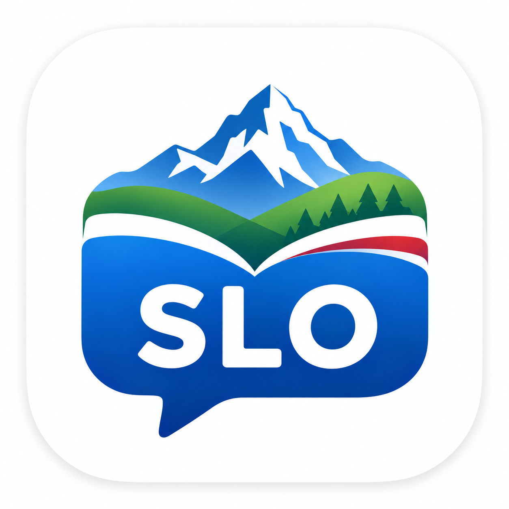
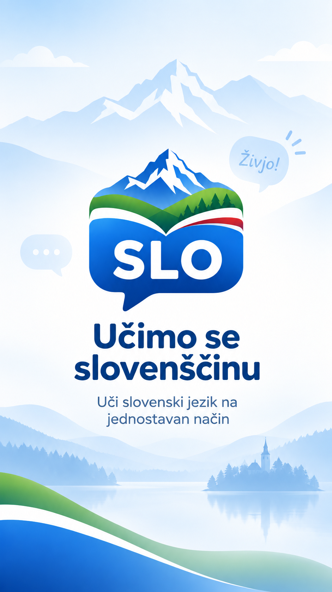

Build the foundation
Introductions, family, numbers, time, food, housing, work, transport and essential grammar.

Učimo se slovenščinoPractical Slovene for everyday life
A structured Android course with useful dialogues, grammar in context, listening, writing and focused review from A1 through B1.
Android release in preparation · Package com.saidf.ucimoslovenscino

One clear learning path
A2 unlocks only after A1 lessons, review and the level check are complete. B1 follows the same rule after A2.
Introductions, family, numbers, time, food, housing, work, transport and essential grammar.
Appointments, services, travel, practical messages, work problems and connected skills practice.
Workplace communication, healthcare, administration, media, technology and expressing an opinion.
Curated words and complete sentences instead of mechanically generated phrases.
Gender, cases, verb forms and the Slovene dual are introduced where learners need them.
Wrong answers return for review and cannot be skipped by repeatedly tapping options.
Slovene pronunciation is available through lesson audio or a compatible device voice.
Seven interface languages
Learners can understand instructions in a familiar language while every lesson keeps Slovene as the language being learned.
Učimo se slovenščino is an independent educational application by Saifex. It is not affiliated with an official examination body and does not issue official CEFR certificates.